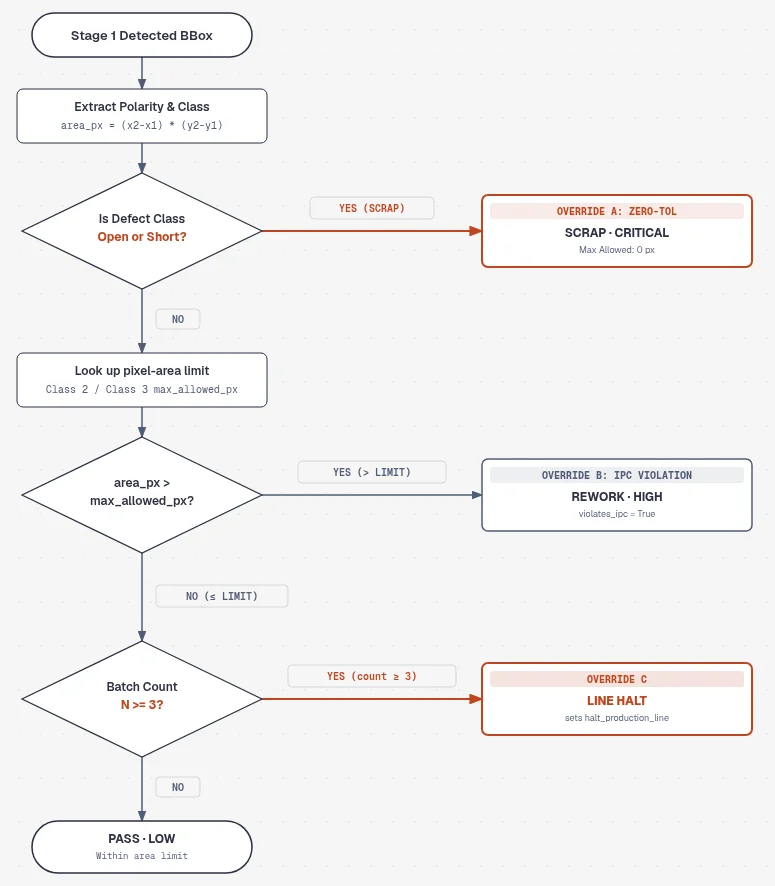
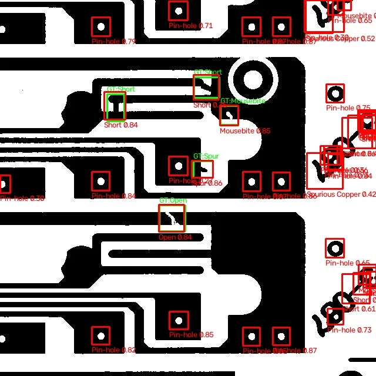
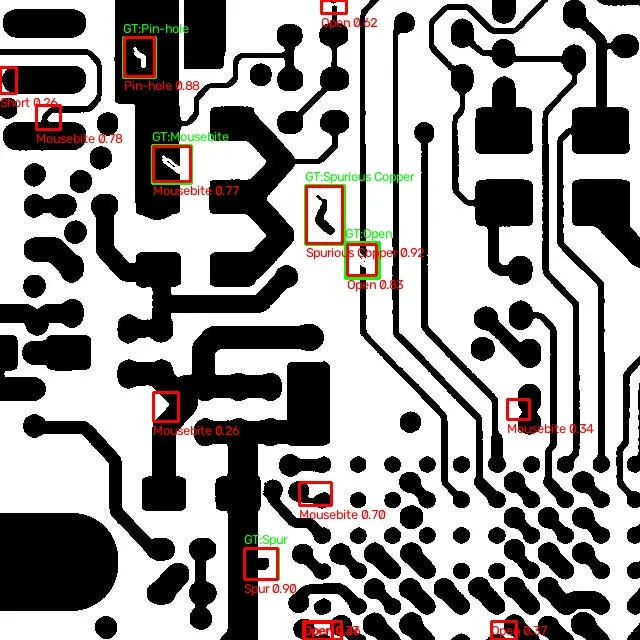

Personal project · 2026
DeepPCB-AOI
Bare-board PCB inspection that finds copper defects with a learned template-aware detector and returns an auditable pass, rework or scrap decision.
RepoDemo video coming

The problem
Bare printed circuit boards are inspected by comparing each board with a known-good template. Finding differences is only half of the job. The line also needs a decision (pass, rework or scrap) that follows written limits, can be audited later, and never lets a fatal defect such as an open or a short through, even if an AI component in the loop disagrees.
What it does
- Takes a template image and a test image (640×640, from the public DeepPCB dataset) and finds the regions where the copper differs.
- Labels each region as one of six classes: open, short, mousebite, spur, spurious copper or pin-hole, using a YOLOv8n model trained on a 3-channel input of
[template, test, |template − test|], or the original hand-built difference baseline. - Comes with an evaluation script that scores any detector on the 500 held-out test pairs at IoU 0.33 and 0.50, per class, and saves the worst boards as images for failure analysis.
- Checks each region against Class 2 / Class 3 area limits (a pixel stand-in for IPC-A-600) and keeps a per-batch count of each class in SQLite.
- Returns PASS, REWORK or SCRAP with a severity, and raises a halt flag when the same defect keeps repeating in a batch.
- Ships as a FastAPI service with a one-page web console (inspect, triage, upload, benchmark and batch telemetry routes); 87 pytest tests.
Results
Scores on the official DeepPCB test split (500 board pairs, 3,140 labelled defects), class-aware matching at IoU 0.33, the threshold used by the dataset's authors. Numbers are copied from evaluation_results.json in the repo.
| Detector | Input | Precision | Recall | F1 |
|---|---|---|---|---|
| A · Difference baseline (hand-built ONNX graph) | template + test | 0.012 | 0.091 | 0.021 |
| B · YOLOv8n, test image only | test | 0.870 | 0.972 | 0.919 |
| C · YOLOv8n, 3-channel composite | [template, test, absdiff] | 0.901 | 0.983 | 0.940 |
At IoU 0.50 the 3-channel model holds at 0.939 F1. Giving the model the template mattered most on the two classes that look like normal copper without it: F1 on Short rose from 0.858 to 0.927 and on Pin-hole from 0.851 to 0.963, where pin-hole precision went from 74% to 93% because normal drilled pads stopped being flagged. In the evaluation run the 3-channel model averaged about 10 ms per board pair on a GPU.
How it works
- 1 · DetectTwo swappable backends. The learned one stacks template, test and their absolute difference into a 3-channel image and runs a YOLOv8n model exported to ONNX, with per-class NMS. The default baseline subtracts the images in a 696-byte ONNX graph and labels blobs by polarity and shape.
core/vision · DETECTOR_BACKEND - 2 · Fast exitNo boxes means PASS. Nothing else runs.
core/vision - 3 · RulesEach box is compared with the area table, and the batch counter for its class goes up.
core/tools - 4 · Optional triageA pluggable model may suggest a decision. Its output must validate as InspectionDecision; it gets up to three attempts, then the rule engine decides. None is configured by default.
core/agent - 5 · GuardrailsOpen and Short are forced to SCRAP / CRITICAL, an over-limit box cannot pass, and the third repeat of a class in a batch halts the line.
core/agent/guardrails.py
Served by api/ (FastAPI) with the console at web/index.html.




Hard parts and decisions
- Geometry lives in one place
- Boxes, scores and areas are computed in
core/vision. Later stages only read them, and the optional model cannot edit box coordinates. - Guardrails run last, in plain Python
- Safety overrides are applied after any model triage. The tests include a stub model that tries to PASS a short; the override catches it and records
guardrail_overridden. - Cheap path first
- An empty detection list returns straight away, and the area check and batch counter run before any model call, so a clean board never costs a model request.
- Model output is a contract
- Anything that does not validate against the Pydantic schema is retried twice and then replaced by the rule engine's decision.
- Measure the baseline first
- The hand-built difference graph scored 0.02 F1 with about 47 false alarms per board, mostly from slight misalignment along sharp copper edges. Putting a number on that is what justified training a model.
- An ablation, not one number
- The same YOLOv8n was trained twice, on the test image alone and on the 3-channel composite, with the same split and seed. Colour augmentation is switched off for the composite so each channel keeps its meaning.
- The rules still have the last word
- Swapping in a learned detector changes only stage 1. Area limits, batch counts and the Open / Short overrides run exactly as before.